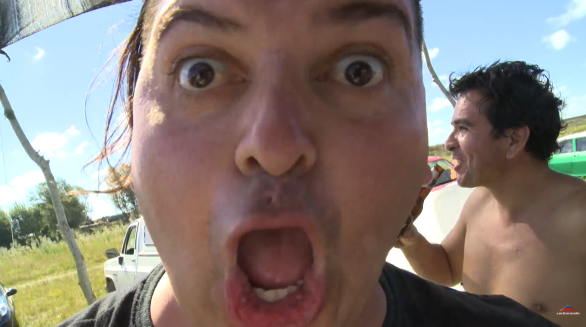

Sos inimputable Un arma es una máquina de hacer agujeros Z O seaaa X Yo la he usado para construir muebles C En vez de usar el taladro ? ¿Y su mujer qué le decía? ? Si entra el chorro, yo no lo puedo amasijar en el patio ? Lo tenés que llevar al lugar más recóndito de tu casa ? Al último dormitorio y si es posible, al sótano ? Y ahí lo reventás a balazos ? No uno, porque vas a ser hábil tirador ? Vos estabas en un estado de emoción violenta ? Lo reventaste a tiros, le vaciaste todo el cargador ? Para demostrar tu estado de locura ? Además tenés que tener una botella de Chivas Regal a mano ? Te tomás media botella ? Y vas al juzgado así ? Sos inimputable, hermano ? En diez días salís ?
 Personaje TC Y vengo a ver al Chivo, loco A ¿Qué es lo que más se extraña de las carreras? S El ruido este, escuchá el ruido D Waaa, eso, waaaa ? Es una música, es algo impresionante ? Que te corre por las venas ? Asadito, corderito ? Ah, bien, vinieron con todo ? *Silbido*, todo, todo, viste, todo ? Wooo, woman no cry ? Todo, viste, vaaamos vaaaamos ? Y ahí después vemos, wa wa wa wa wa ? Y ya somos nosotros, viste ? Cuando termina la carrera, ahí empezamos... ? Pu pu pu pu pu ? Vamos, arrancó el TC ? Te hago una pregunta ? El Pollo no va a venir más a las carreras ? ¿El pollo o yo? ? Vos, loco ? El Pollo es un cagón ? Aaaa ?
Esto no es coca No, esto no es coca, papi Q Mmm, ujuju W La campe del tío, mirá E Jujujujuju ? Sabias palabras del tío ? No, no es tuyo, papi, nooo ? Mirá Kevin, jojo, coca ? Juju ? Sí pero, ¿y la campera? ? Dejá la campera papi ?